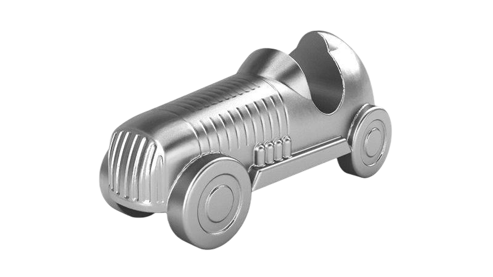

1900-1945 - L'ERA DEI GRANDI MITI
MONOPOLY
Mentre il mondo affrontava le macerie economiche del crollo di Wall Street, nel 1935 arrivò nelle case un gioco che avrebbe cambiato per sempre le serate in famiglia. Il Monopoli offriva qualcosa di irresistibile: la possibilità di comprare strade, costruire hotel e mandare in bancarotta i propri amici, il tutto restando comodamente seduti al tavolo della cucina.
INVENZIONI E DIRITTI
La storia "ufficiale" attribuisce il gioco a Charles Darrow, un venditore disoccupato che propose il progetto alla Parker Brothers. Tuttavia, la vera origine è molto più affascinante:
- The Landlord's Game: Trent'anni prima, nel 1903, una donna di nome Elizabeth Magie aveva creato un gioco simile per denunciare le ingiustizie del capitalismo e dei monopoli terrieri.
- Ironia della sorte: Magie voleva insegnare quanto fosse ingiusto che pochi possedessero tutto; ironicamente, il gioco divenne il simbolo mondiale del successo capitalistico individuale.


GLI ELEMENTI ICONICI
Il Monopoly ha creato un linguaggio visivo e terminologico che usiamo ancora oggi:
- Le pedine: Oggetti d'uso quotidiano come il ditale, la scarpa, il ferro da stiro o il cappello a cilindro. Durante la Seconda Guerra Mondiale, a causa della carenza di metallo, alcune pedine vennero realizzate in legno o bachelite.
- Vicolo Corto e Parco della Vittoria: I nomi delle strade (nella versione italiana adattati durante il regime fascista) sono diventati sinonimi di "prestigio" o "sfortuna".
- La prigione: : Il timore di ogni giocatore, un luogo dove restare bloccati mentre gli altri costruiscono imperi.

UN SUCCESSO SENZA TEMPO
Perché ebbe così tanto successo tra il 1930 e il 1945? Perché era un gioco di evasione. In un periodo di estrema povertà, maneggiare mazzette di banconote colorate (anche se finte) e discutere di investimenti immobiliari dava alle persone un senso di controllo e speranza in un futuro più prospero.